A Special Disease
특수 질환
쉽게 다루기 힘든 피부 문제일수록,
세밀한 판단과 꾸준한 관찰이 필요합니다.
라온피부의 특수질환 레이저 클리닉에서는
‘난치성 피부질환도 상태에 맞게 나아질 수 있다’는 믿음으로,
내원한 환자마다 다른 피부 상태에 맞춘
피부 컨디션에 맞춘 진료 계획을 세우고 차근차근 살핍니다.
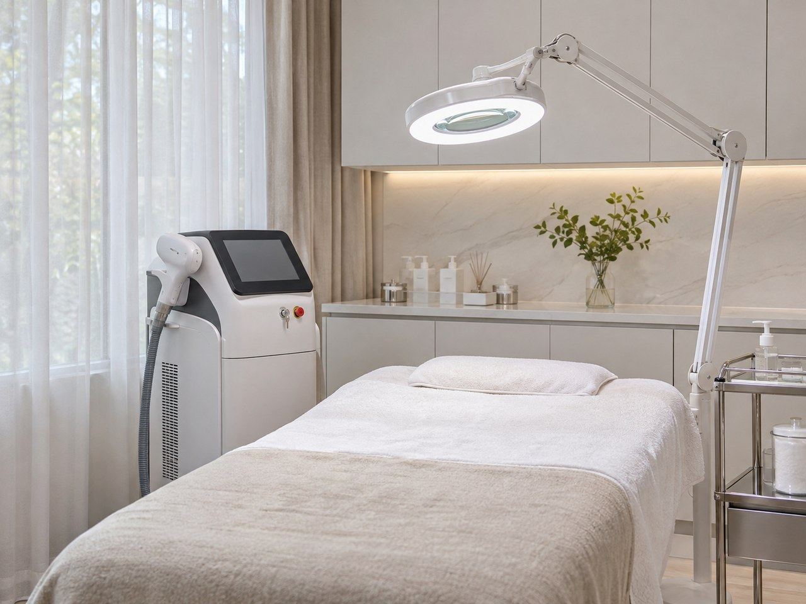
Detail &Professional
라온피부의원은
국내 서림종합병원 피부과 ‘피부종양-미용외과 클리닉’ 진료 담당의
피부과 전문의, 김서윤 대표원장의
상담부터 회복 관리까지 일관된 진료 흐름으로 운영합니다.
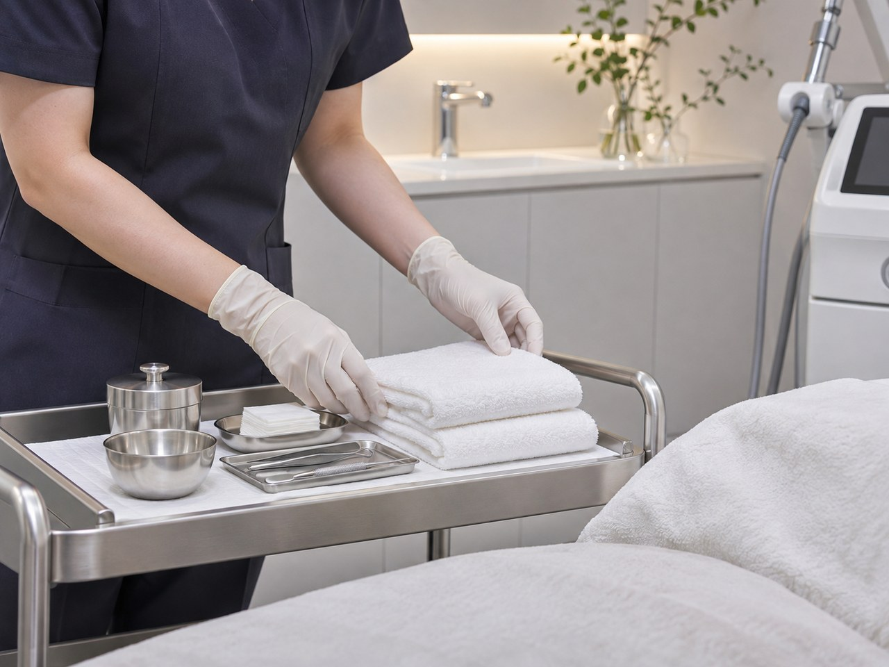
포다이스반 (Fordyce's spot)
정상적인 피지선이 피부 표면에서 도드라져 보이는 현상입니다.
생기는 계기는 우연한 경우도 있으며
흔히 관찰되는 양상으로 여겨집니다.
포다이스반은 한 번 생기면 자연적으로 사라지기 어려워
오랜 시간이 걸리며,
입술의 자연스러운 색을 덮어 보이게 해
일상에서 신경 쓰이는 증상으로 이어질 수 있습니다.
특징
무증상 l 노랗거나 하얀 알갱이 형태
발생 부위
입술 안쪽과 잇몸, 볼 점막 등 여러 부위
특징
무증상 l 노랗거나 하얀 알갱이 형태
발생 부위
입술 안쪽과 잇몸, 볼 점막 등 여러 부위
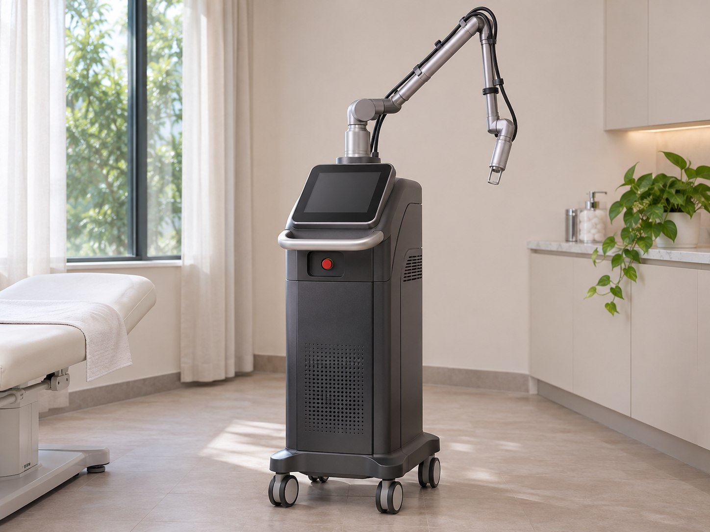
치료 과정-
Step 1.
진단 & 치료계획 수립
피부과 전문의가 상태를 개별 확인하고
세밀한 피부 촬영과 상태 확인을 거쳐
진단 & 계획수립 -
Step 2.
절연침을 이용한 세밀한 고주파 관리
비수술적 방법인
절연침 고주파 에너지를 활용하는
포다이스반의 크기와 분포를 살피며 관리 -
Step 3.
맞춤형 사후 관리
빠른 일상 회복을 위한,
맞춤형 후처치와
재생 관리
라온피부의원은
포다이스반을
전문적으로 치료하여,
환자분의 삶의 질을
높히고자 합니다.
라온피부의원은
포다이스반을
전문적으로 치료하여,
환자분의 삶의 질을
높히고자 합니다.
피지샘 증식증
피지샘 증식증은 피지를 만드는 샘이
주변보다 도드라져 보일 만큼 커진
양성종양 입니다.
겉모양이 비슷해 여드름이나 사마귀로 잘못 알아보기도 합니다.
기존에는 피지샘 증식증 치료를 위해,
기존에는 피부 표면을 벗기는 박피성 레이저를 사용했지만
이 경우 치료에 도움이 되지만 깊은 곳의 피지샘 증식증은
관리가 까다로운 경우가 있으며
깊은 자국이 남거나
다시 나타날 수 있습니다.
특징
연노랑이나 흰빛으로 솟은 돌기 l 30대~50대 주로 발생
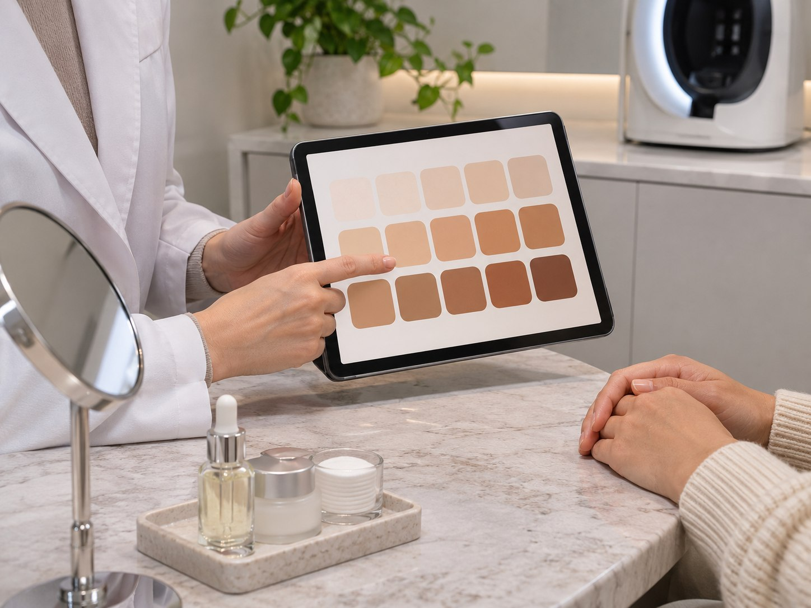
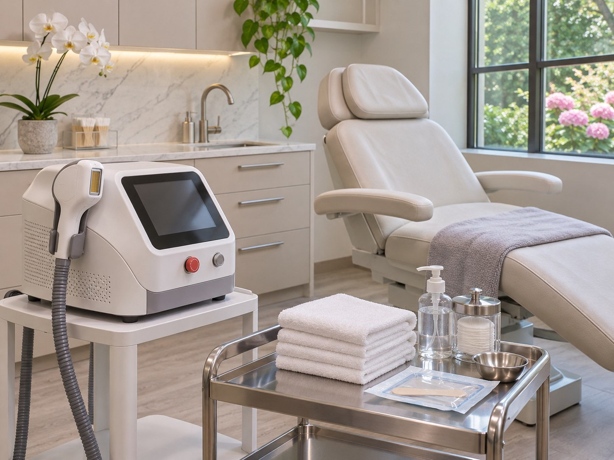
특징
연노랑이나 흰빛으로 솟은 돌기
30대~50대 주로 발생
라온피부의원은 비수술적 방법으로
박피 레이저가 부담되는 점을 고려하고
피지샘 증식증의 병변을 알맞게 다루는 전문 병원입니다.
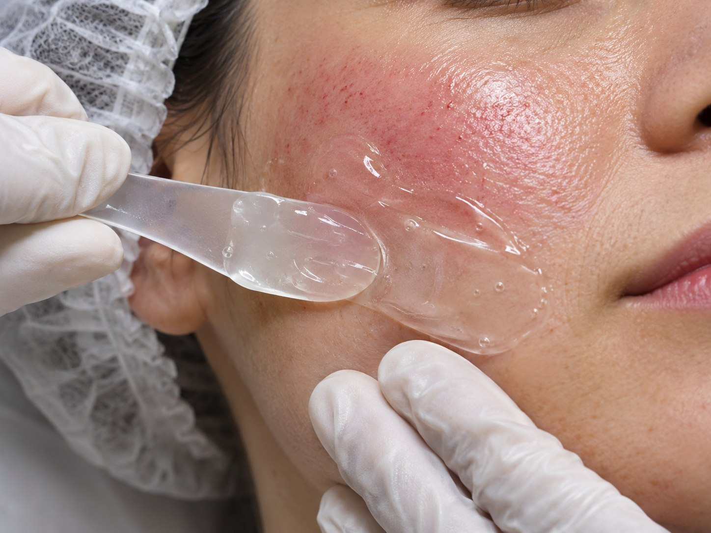
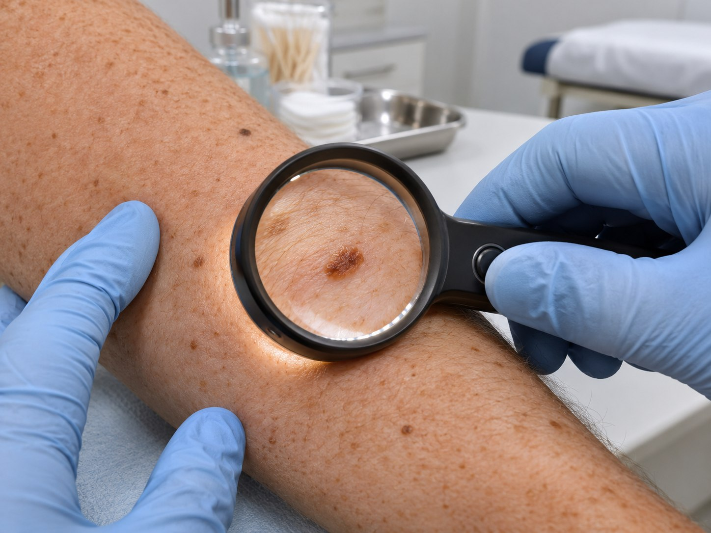
치료 과정-
Step 1.
진단 & 치료계획 수립
피부과 전문의의
더모스코피로 병변을 확대해 살펴보고
정밀한 진단 -
Step 2.
절연침을 이용한 세밀한 고주파 관리
비수술적 방법인
절연침 고주파 에너지를 활용하는
피지샘 증식증의 돌출 정도에 맞춰 관리 -
Step 3.
맞춤형 사후 관리
빠른 일상 회복을 위한,
피부 반응에 맞춘 회복 단계 관리
한관종
한관종은 땀샘과 비슷한 세포로 구성된 양성 피부 종양으로,
편평사마귀나 비립종과 비슷하게 보일 수 있지만
이 병변과는 구분해서 살펴야 합니다.
한관종은 피부 안쪽 깊은 층에 있어 일반적인 박피 레이저만으로는
치료가 까다롭고 흉터가 남을 위험도 있습니다.
1~3mm의 작은 병변도 시간이 지나면서 서로 모일 수 있어
상태를 일찍 확인해 관리하는 편이 좋습니다.
라온피부의원에서는 비박피성 고주파로
한관종을 부담이 적은 방법으로 관리하는 데 초점을 둡니다.
특징
무증상 l 살색 또는 흰색의 돌기 형태
발생 부위
눈꺼풀과 눈 아래, 콧등·관자·이마 주변
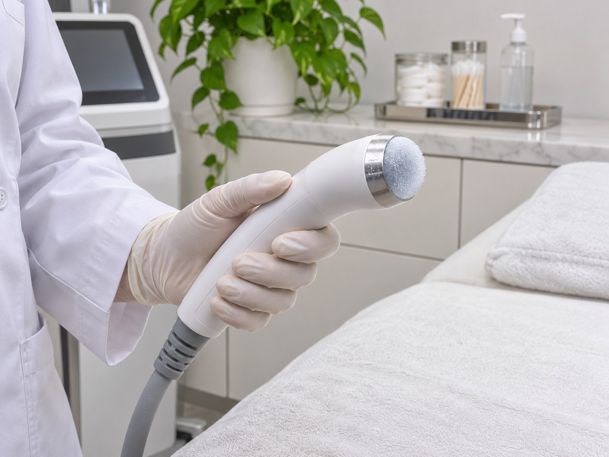
특징
무증상 l 살색 또는 흰색의 돌기 형태
발생 부위
눈꺼풀과 눈 아래, 콧등·관자·이마 주변
라온피부의원에서는
피부 표면 손상을 줄이는 고주파 한관종 치료를
도모합니다.
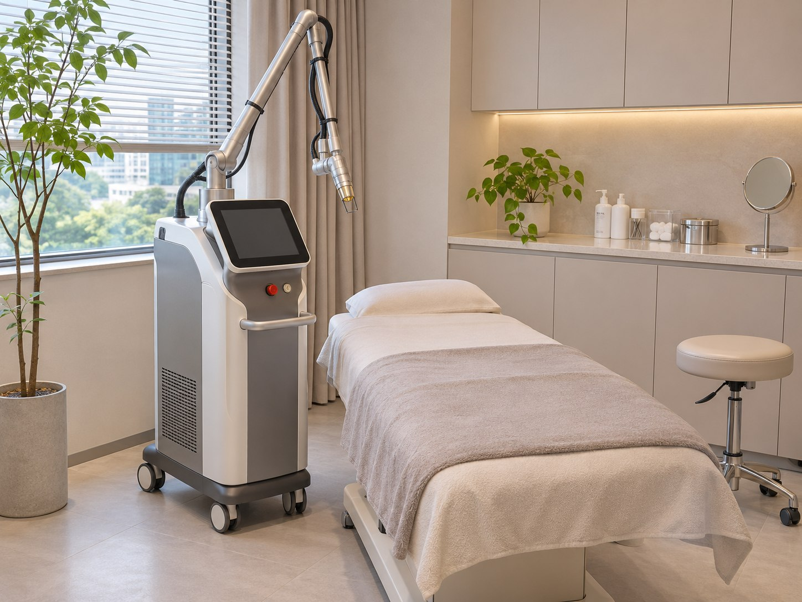
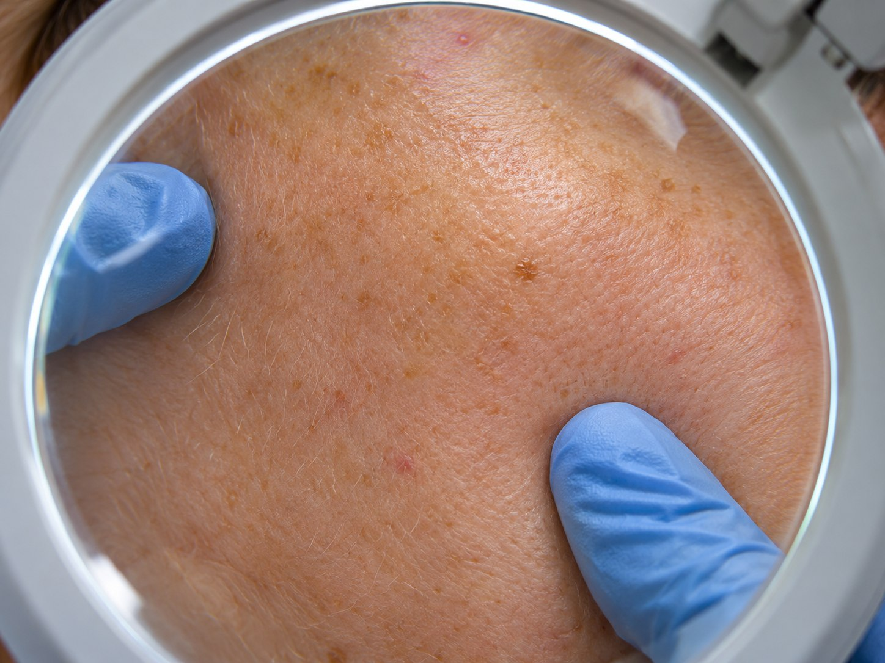
치료 과정-
Step 1.
진단 & 치료계획 수립
전문의의 더모스코피 관찰로
확대경 검사를 통한
정밀한 진단 -
Step 2.
절연침을 이용한 세밀한 고주파 관리
비수술적 방법인
가는 절연침으로 고주파 에너지를 전달해
진피층 깊은 곳에 자리한 한관종까지 단계적으로 관리 -
Step 3.
맞춤형 사후 관리
빠른 일상 회복을 위한,
맞춤형 후처치와
재생 관리
안검황색종
안검황색종은 눈 주변 피부 안쪽에 지방이 비정상적으로 쌓이는
질환으로
작게는 2~4mm의 노랗고
작은 돌기가 도드라지며 시작되어
크기가 커지고,
증상이 심하면 눈가를 넘어 이마와 볼까지
주변 부위로 퍼져 보일 때도 있습니다.
일부 환자의 안검황색종은 고지혈증과 관련될 수 있습니다.
다만 고지혈증을 치료해도 이미 생긴 안검황색종이
사라지지는 않습니다.
안검황색종은 주로 눈꺼풀 및 눈꼬리 안쪽까지
이런 양상으로 나타날 수 있습니다.
자극에 민감한 눈가 피부를
절개를 동반하는 수술 방식은
개선 과정에 제약이 따를 수 있습니다.
특징
눈꺼풀과 눈 밑에 노란 돌기나 넓은 판처럼 보이는 병변
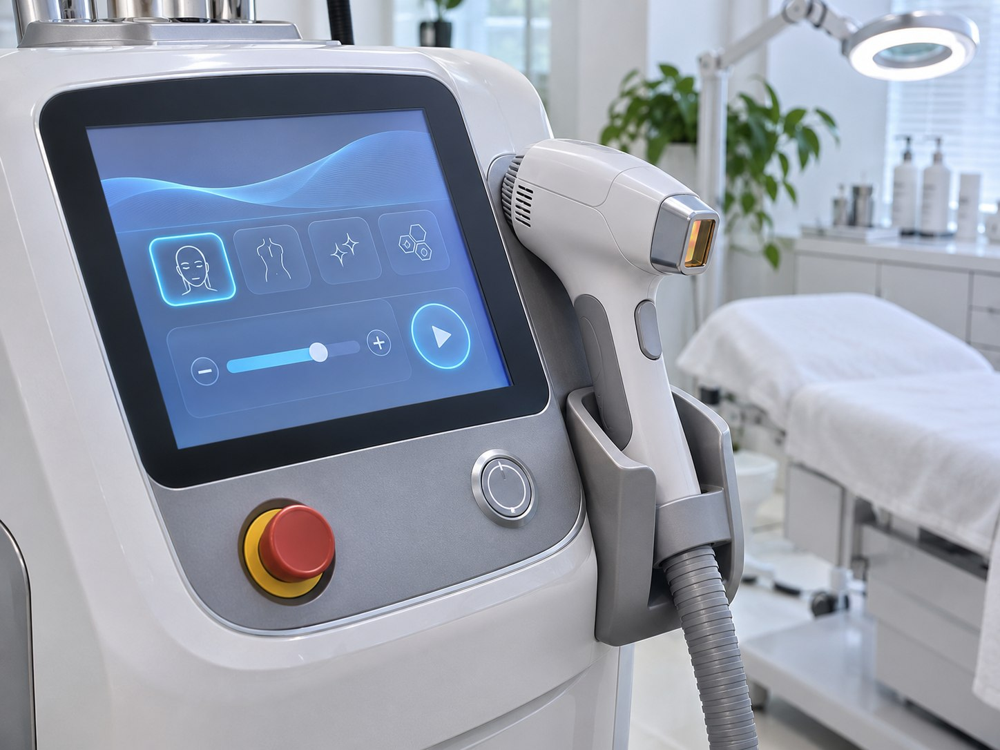
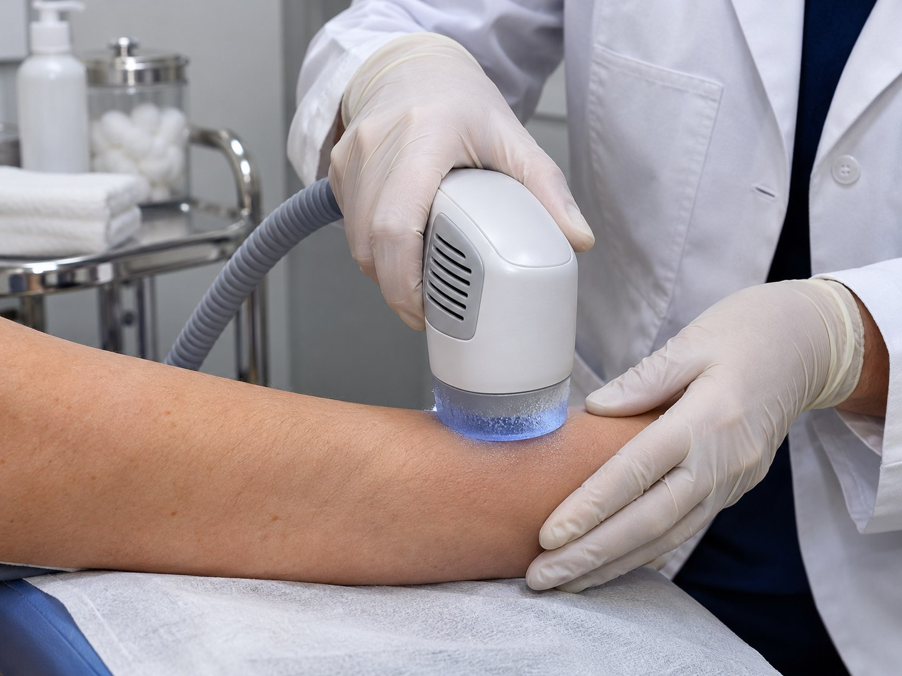
눈가 황색 병변을 살피는 진료 방향-
절개 없는 방식으로
피부를 최대한 보존 -
레이저 + 고주파 병행으로
치료 효과 극대화 -
병변의 위치,깊이 및
범위에 따라
단계적 치료 설계 -
수술로 치료가 어려운
눈가의 섬세한 부위까지
정밀하게 접근
입술반점
입술반점은 입술에 생기는 갈색 또는 검은색 얼룩을 뜻합니다.
입술에 생긴 반점은 대개 양성이지만,
라온피부의원에서는 더모스코피 확대경을 활용하여
의심되는 반점이 있는지 꼼꼼히 구분해 살핍니다.
입술 반점은 생긴 뒤 옅어지기까지 시간이 오래 걸릴 수 있으며,
본래의 붉은 입술색을 가려 외관상 불편을 줄 수 있습니다.
특징
1~4mm 크기로 경계가 뚜렷한 갈색 또는 검은 반점
발생 부위
입술, 입술 안쪽 점막
특징
1~4mm 크기로 경계가 뚜렷한 갈색 또는 검은 반점
발생 부위
입술, 입술 안쪽 점막
얇고 예민한 입술 피부에 맞는 세기와 에너지로
주변 조직의 부담을 고려해 색소를 겨냥하고,
정상적인 입술색으로 자연스럽게 돌아오도록 돕습니다.
라온피부의원에서는
입술 병변의 모양과 자리까지 확인한 뒤,
색소 특성을 겨냥하는 레이저를 사용한 치료를 시행합니다.
난치성 색소증
난치성 색소증은 관리 과정이 복잡한 색소성 피부 질환을
의미하는 용어로,
여러 요인이 겹쳐 피부에 나타난
색소 변화가
단기간에 가라앉기 어려운 상태를 말합니다.
이들 색소 질환은 표피에만 국한되지 않고,
진피층 깊숙이
자리하거나 색소세포가 지나치게 활성화된 경우가 많아
정확한 진단과 개인별 치료 계획이 있어야 개선을 기대할 수 있습니다.
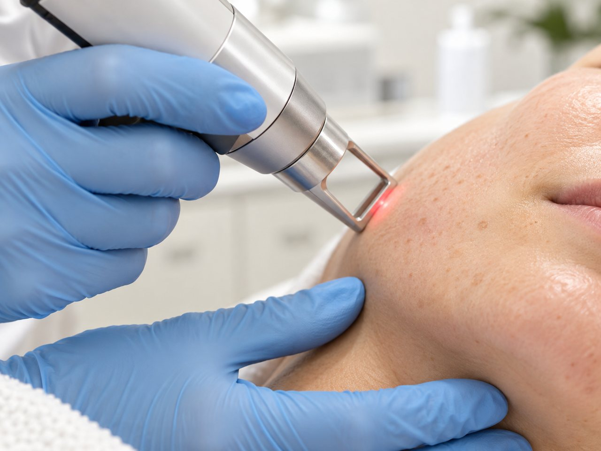
오래 남는 색소 병변을 살피는 기준Point 1 복합적인 레이저 치료
Point 2 피부과 전문의가 병변 상태를 살피는 진료
Point 3 경과를 살펴 재발 여부를 확인하는 관리
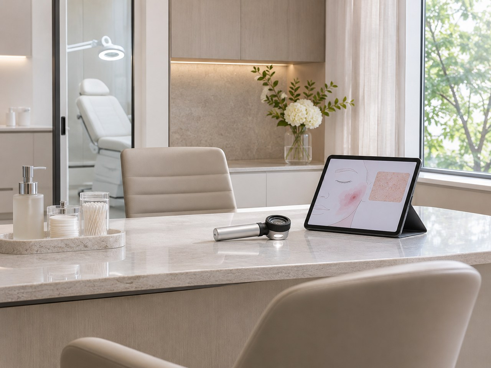
오래 남는 색소 병변을 살피는 기준Point 1 복합적인 레이저 치료
Point 2 피부과 전문의가 병변 상태를 살피는 진료
Point 3 경과를 살펴 재발 여부를 확인하는 관리
색소 질환은 겉으로 보이는 부분만 덜어내기보다
정확히 ‘구분’하고 ‘조절’하는 일에서 출발합니다.
치료가 까다로운 색소 질환은 여러 원인이 얽힌
레이저 시술로 이어가며, 시술의 기간이 장기간으로 이어지기 때문에
피부과 전문의가 상태를 정확히 확인하고 치료 방향을 세우는 것이 중요합니다.